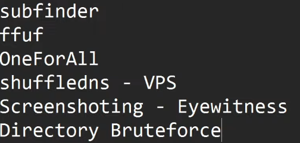

- Now find subdomains of subdomains- shuffledns (projectdiscovery) - Alternate - puredns, massdns, altdns
- needs a wordlist to bruteforce a domain to find subdomains
- dns resolvers will help us to not get our ip blacklisted during bruteforcing (resolvers.txt github)
- using fuff
- using oneforall github
- directory bruteforcing - wfuzz, fuff, dirsearch (best), dirb, dirbuster, gobuster
- we can also edit path variables in the .zshrc file.
- set alias - edit. config file .zshrc - then source .zshrc
